| Nombre |
Descripcion |
Portadores |
Imagen |
Titán fundador |
Es uno de los Nueve Titanes y el más poderoso entre ellos, posee la capacidad de crear titanes puros y controlar las acciones de estos, así como también modificar las memorias de la Gente de Ymir. El poder del Titán Fundador solo puede ser utilizado por aquellos individuos que pertenezcan al linaje real de Eldia, aunque bajo determinadas circunstancias, puede ser activado por cualquier otro descendiente de Ymir Fritz. Su último poseedor fue Eren Jaeger y desapareció tras la muerte de este último. |
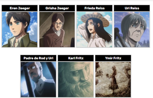 |
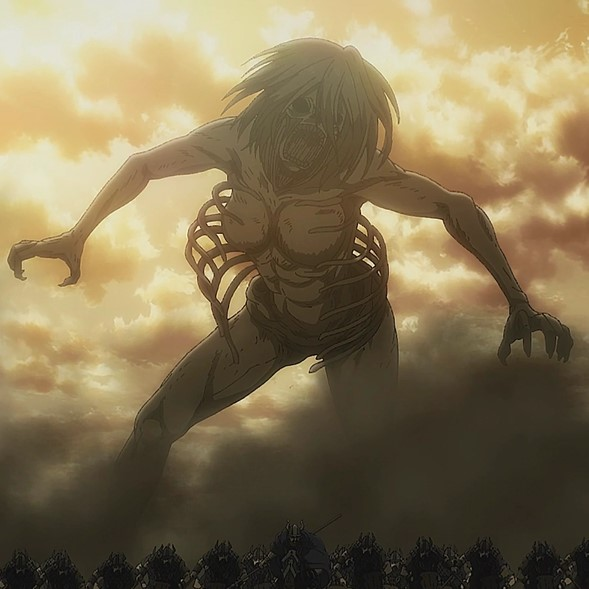 |
Titán de ataque |
Es uno de los Nueve Titanes. Posee la habilidad de enseñar a sus portadores los recuerdos de sus sucesores. Además, ganó la capacidad de endurecerse luego de que Eren Jaeger, su último portador, consumiera un suero de "Acorazado". Durante generaciones, los usuarios del Titán de Ataque han luchado por Eldia y la libertad. |
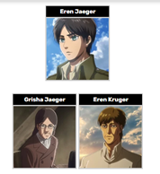 |
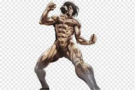 |
Titán colosal |
Es uno de los Nueve Titanes y el más grande y físicamente fuerte de todos. Sus características principales son su gran tamaño, su gran fuerza física y su lentitud. Está actualmente en posesión de Armin Arlert. . |
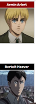 |
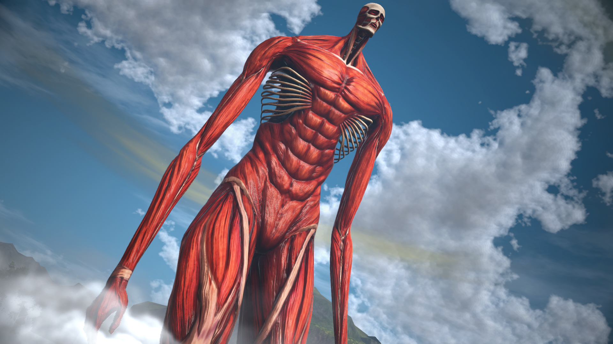 |
Titán Acorazado |
Es uno de los Nueve Titanes, provee a su usuario de una piel muy resistente.El Titán Acorazado tal como lo ven, es un titán especializado en el endurecimiento. Si golpea con todo el cuerpo, seguramente será capaz de romper incluso una puerta del muro. Este titán que se convierte en el escudo de Marley, y recibe ataques le va muy bien a Braun, que es tan paciente. |
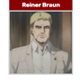 |
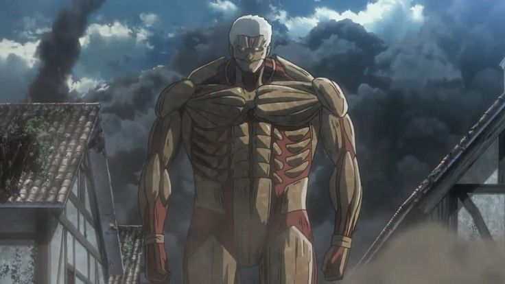 |
Titán Hembra |
Es una de los Nueve Titanes. Posee múltiples habilidades, entre ellas, atraer titanes puros con su grito, endurecimiento temporal de su piel y regeneración concentrada y acelerada. Se encuentra actualmente en posesión de Annie Leonhart. |
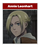 |
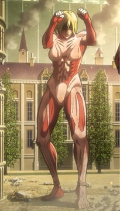 |
Titán Bestia |
Es uno de los Nueve Titanes y está a disposición de Marley. Provee a su usuario de una gran fuerza física, que le permite arrojar objetos a grandes distancias con precisión. Su último poseedor fue Zeke Jaeger, un miembro de la familia real Fritz. |
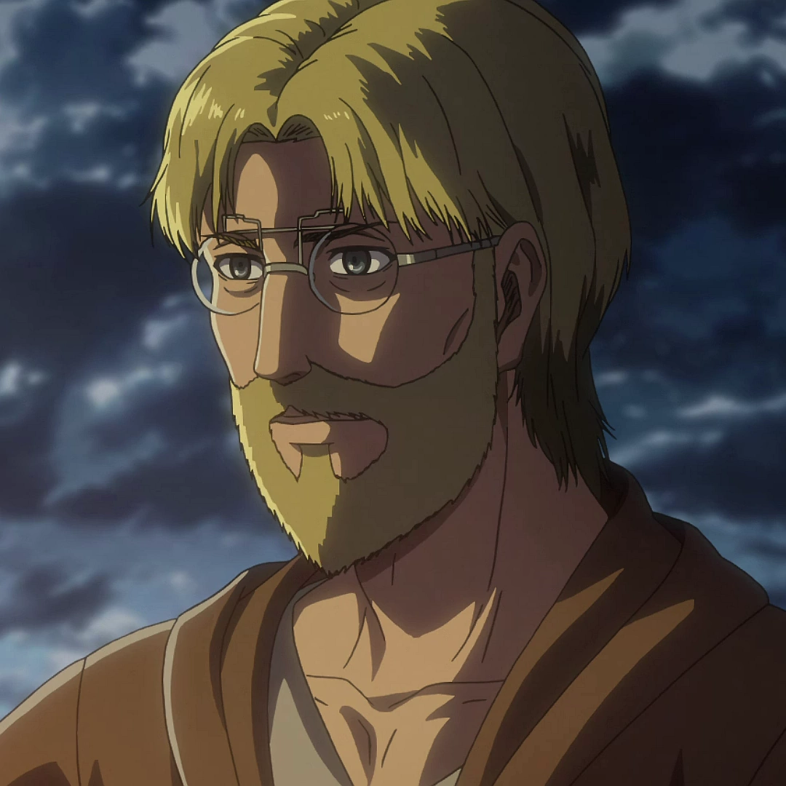 |
 |
Titán Mandíbula |
Provee a su usuario la capacidad de transformarse en un titán con una poderosa mandíbula y afiladas garras. El Titán Mandíbula es de asalto. Es pequeño y ágil, pero puede destruir de todo con sus garras y su mandíbula.Su último poseedor fue Falco Grice hasta la desaparición del Poder de los titanes.
|
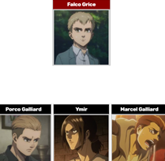 |
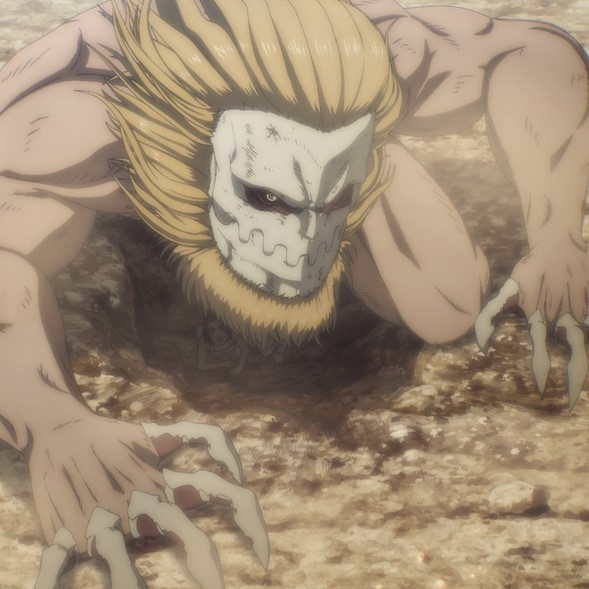 |
Titán Carguero |
Provee a su usuario la capacidad de transformarse en un titán cuadrúpedo extremadamente ágil y lo suficientemente fuerte como para cargar el equipo necesario sin perder velocidad, lo cual hace a este titán perfecto para transporte y apoyo, Pieck Finger fue su ultima poseedora hasta la desaparición del Poder de los titanes. |
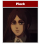 |
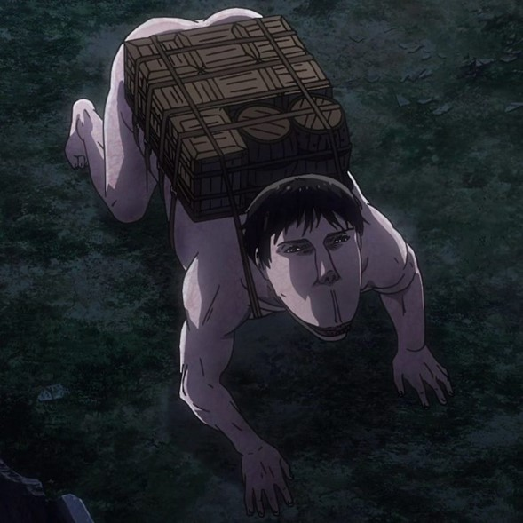 |
Titán Martillo de Guerra |
Posee una capacidad de endurecimiento superior a la de cualquier titán, lo que le permite crear armas de corto alcance y pilares del suelo con los que puede atrapar a sus enemigos. Actualmente se encuentra en posesión de Eren Jaeger. |
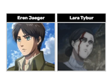 |
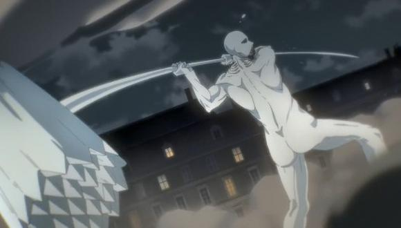 |